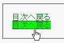
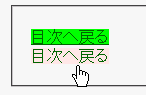

擬似セレクタを二重指定しても、始めのセレクタしか認識しない。例えば a:link:active や a:link:hover は a:link と扱われる。
<style type="text/css">
a:visited:hover {
background: lime;
}
-->
</style>
<p><a href="../opera.html">目次へ戻る</a></p>
既訪リンクにマウスポインタ等を重ねた場合に背景を黄緑色に変えています。
Moz1.0での表示
Opera6.05での表示
Opera6.05では不具合の発生が確認されました。Opera7.0では標準・互換モードともに不具合の発生は確認されませんでした。